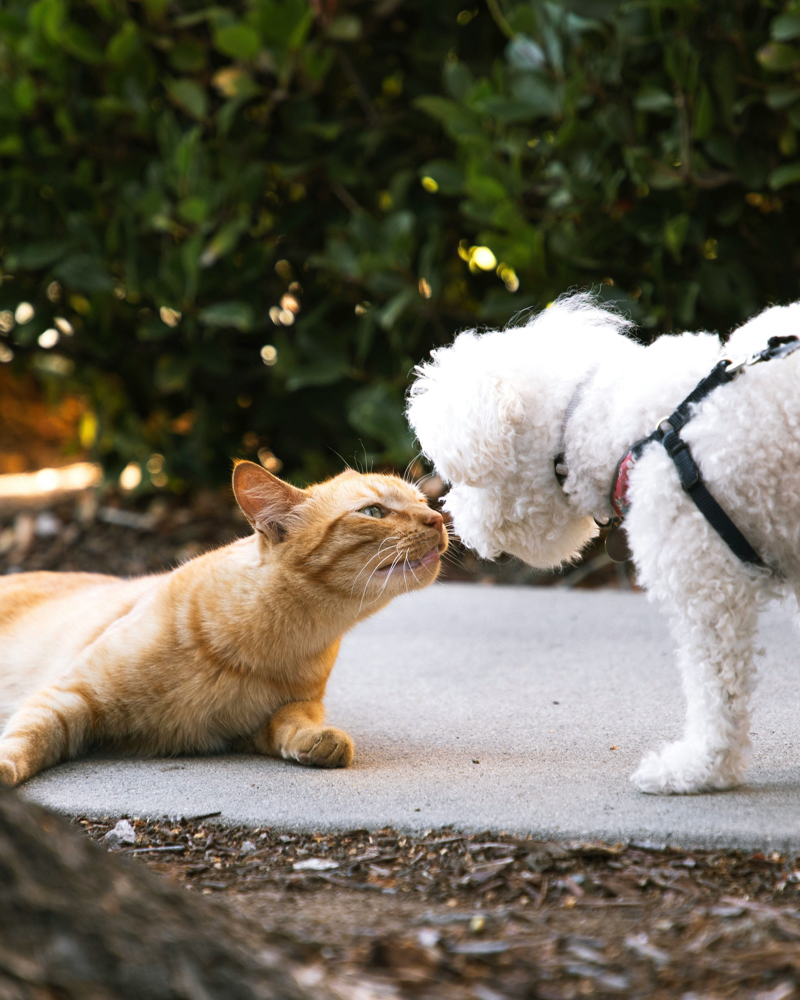

Um passeio é cheio de cheiros, sons e visões novas. Cada caminhada é uma aventura para os pets, estimulando suas mentes e evitando o tédio. Isso pode prevenir comportamentos destrutivos em casa, como mastigar móveis ou latir excessivamente.
Assim como nós, os pets precisam se mexer para manter a saúde em dia. Caminhadas ajudam a evitar a obesidade, problemas nas articulações e outras doenças relacionadas ao sedentarismo.